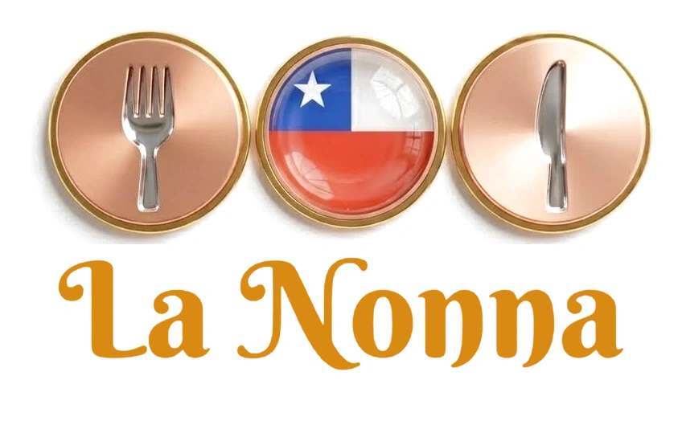

Pedidos y salón para restaurantes
Prueba las tres aplicaciones tal como las usaría el local. Todo es una demostración con datos de ejemplo.
🧪 Demostración: nombres, precios y pedidos son inventados y no se guarda nada; al recargar vuelve todo al inicio. Pagos simulados. Funciona sin instalar nada.
📱 App del cliente
Ve el menú del día, pide para retiro o despacho, paga y sigue el pedido con su QR. Puedes crear una cuenta de prueba.
🍽 Cliente sentado en una mesa
Lo que ve quien escanea el QR de su mesa: el menú, la cuenta y el pago de su parte.
🖥 Panel del dueño
Control del día en vivo: pedidos, mapa de mesas por color, tiempos, equipo y asistencia, carta y menú, clientes y fidelidad.
👥 App del equipo
Un solo acceso para cocina, despacho, repartidor y mozos; el puesto lo define el QR del día. Elige un puesto para probarlo.
Una prueba de BTo Innova, Soluciones